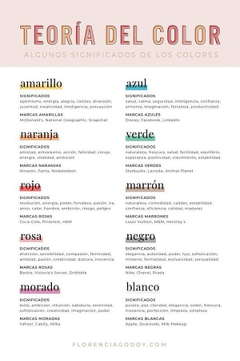
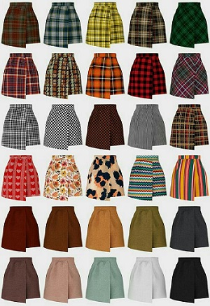
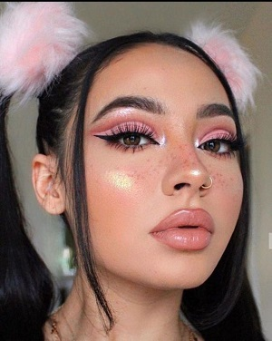
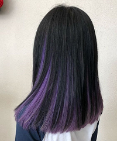

COLORES
Los colores llamativos y brillantes.El color que más se utiliza en el estilo indie es el marrón, desde su gama más clara como el beige hasta la más oscura, como el toffee. Estos tonos se suelen complementar con otros colores como el negro. Colores artisticos,visualmente atractivos quer embellecen laropa a simple vista.
PATRONES
Incluye prendas con estampados llamativos colores vibrantes,patrones y texturas unicas y cortes y diseños poco convencionales.Todos estosn estilos comparten la caracteristica de ser diferente y llamativos.tienen que convinar los patrones para admirar la belleza y el arte de los patrones
Algunos tienen que ser atractivos obvio bolsas baguette, calcetines con zapatillas,tipo nike air force 1, collares tipo chokers con lunas o cristales de cuarzo

Pueden ser una alternativa muy divertida y cool para ustedes que aman el maquillaje trendy.Si bien es una opcion segura para comenzar ustedes pueden darle su toque persobnal y convertir su makeup en algo increible. La textura de la piel es uno de los factores mas importantes de este maquillaje aesthetic asi que no duden en experimentar con efectos como el dewy skio piel luminosa o incluso añadir un extra glow con el iluminador de su plaeta de maquillaje de rostro favorita.En tonos duraznos,donde puedes jugar con emoticones en tu rostro con tu estilo y ser instagrameable
Es una corriente que engloba estilo de ropa,peinados y accesorios con un toquer de nostalgia noventeralo que mas amamos de esta corriente es que recoge todas tendencias de losaños noventa como el toque inocente o el grunge para tener elpelo aesthetic puedes seguir estos tips:puedes teñir tu cabello de cualquier color pastel de moda como lila o rosa añadir unos mechas (hunk) a los mechones delanteros
